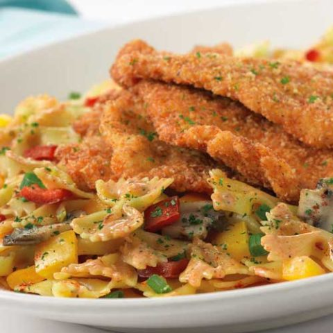

Lousiana Chicken Pasta

Description
Pieces of crispy Parmesan-crusted chicken, colorful peppers and tender mushrooms, and al dente bow tie pasta bathed in a creamy Cajun cream sauce. The spicy flavor and perfectly cooked pasta in this Cheesecake Factory Louisiana Chicken Pasta brings home the meaning of a hearty meal.
Ingredients
- class="heading">Chicken
- 4 tablespoons vegetable oil
- 6 skinless boneless chicken breast halves
- 3/4 cup bread crumbs
- 1/4 cup grated Parmesan cheese
- 1 cup milk
- 2 tablespoons flour
- Cajun Sauce
- 1 tablespoon butter
- 1 small yellow bell pepper, chopped
- 1 small red bell pepper, chopped
- 3/4 small red onion, chopped
- 3 whole garlic cloves, minced
- 1 teaspoon crushed red pepper
- 1 1/4 pints whipping cream
- 1 cup low-salt chicken broth
- 4 tablespoons fresh basil, thinly sliced
- 1 cup grated Parmesan cheese
- 1 package bow-tie pasta
- 1 cup mushrooms, sliced
- salt and pepper
Steps
- Melt butter in heavy large skillet over medium-high heat. Add yellow and red bell peppers, mushrooms, and onion to same skillet and saute until crisp-tender, about 4 minutes.
- Add minced garlic and crushed red pepper to skillet and saute 2 or 3 minutes.
- Add whipping cream and chicken stock. Simmer until sauce re-heats and thickens slightly, about 5 minutes.
- Add basil and 1 cup grated Parmesan cheese to sauce, stirring to incorporate. Season sauce to taste with salt and pepper. Reduce heat to low, simmer. Sauce will reduce and thicken.
- Wash and drain chicken breasts. Pound until very thin, as thin or thinner then 1/4-inch thick (the thinner the chicken breasts the better).
- Mix breadcrumbs, flour, and Parmesan cheese together. Place milk in dish for dipping.
- Dip chicken in breadcrumb mixture and then in milk and then back in breadcrumbs.
- Place in fry pan that the oil has been heated and fry at medium high temperature until golden, crisp, and cooked through. Add more oil as needed. Remove and drain chicken. Keep warm.
- Meanwhile, cook bow-tie pasta in large pot of boiling salted water until tender but still firm to bite. Drain and return to pot. Add sauce and toss to coat.
- Place pasta with sauce on plate, and top with chicken breast. Serve, passing additional Parmesan separately.